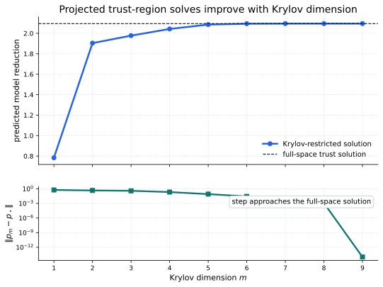
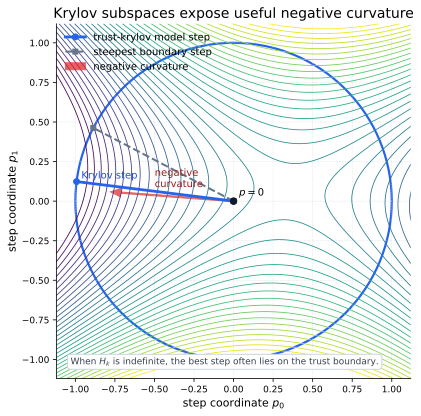
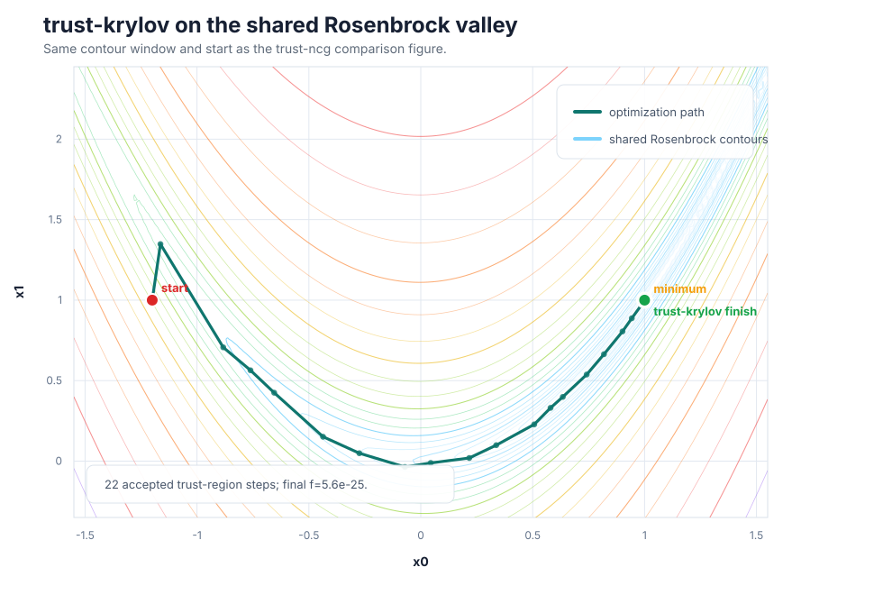

Core Idea
trust-krylov uses the same local quadratic model and trust radius:
The difference is how the subproblem is solved. Instead of using a truncated CG step alone, trust-krylov solves the subproblem in a growing Krylov subspace:
Krylov Subspace Solve
Inside the subspace, the large Hessian is represented by a much smaller projected matrix. The GLTR idea is to solve the trust-region problem accurately in that low-dimensional space:


Rosenbrock Example
On Rosenbrock, trust-krylov can use the full Hessian or just Hessian products. The Hessian-vector product interface keeps the method suitable for large-scale problems:

Using SciPy
In SciPy, use method="trust-krylov". Provide
jac and either hess or hessp.
The Hessian-vector product version is often the point of the method.
import numpy as np
from scipy.optimize import minimize
def rosen(x):
return np.sum(100.0 * (x[1:] - x[:-1]**2.0)**2.0 + (1 - x[:-1])**2.0)
def rosen_der(x):
xm = x[1:-1]
xm_m1 = x[:-2]
xm_p1 = x[2:]
der = np.zeros_like(x)
der[1:-1] = 200 * (xm - xm_m1**2) - 400 * (xm_p1 - xm**2) * xm - 2 * (1 - xm)
der[0] = -400 * x[0] * (x[1] - x[0]**2) - 2 * (1 - x[0])
der[-1] = 200 * (x[-1] - x[-2]**2)
return der
def rosen_hess_p(x, p):
x = np.asarray(x)
Hp = np.zeros_like(x)
Hp[0] = (1200 * x[0]**2 - 400 * x[1] + 2) * p[0] - 400 * x[0] * p[1]
Hp[1:-1] = (
-400 * x[:-2] * p[:-2]
+ (202 + 1200 * x[1:-1]**2 - 400 * x[2:]) * p[1:-1]
- 400 * x[1:-1] * p[2:]
)
Hp[-1] = -400 * x[-2] * p[-2] + 200 * p[-1]
return Hp
x0 = np.array([1.3, 0.7, 0.8, 1.9, 1.2])
result = minimize(
rosen,
x0,
method="trust-krylov",
jac=rosen_der,
hessp=rosen_hess_p,
options={"gtol": 1e-8, "disp": True},
)
print(result.x)When To Use It
| Use trust-krylov when | Prefer another method when |
|---|---|
| You have gradients and Hessian-vector products for a large smooth problem. | You only have function values; derivative-free methods fit that information level better. |
| The Hessian may be indefinite and a more accurate trust-region subproblem solve is worth extra products. | Each Hessian-vector product is very expensive; trust-ncg may be cheaper per outer iteration. |
| You want fewer nonlinear iterations than trust-ncg on hard curvature. | The problem is medium-sized with a cheap dense Hessian; trust-exact may be more direct. |